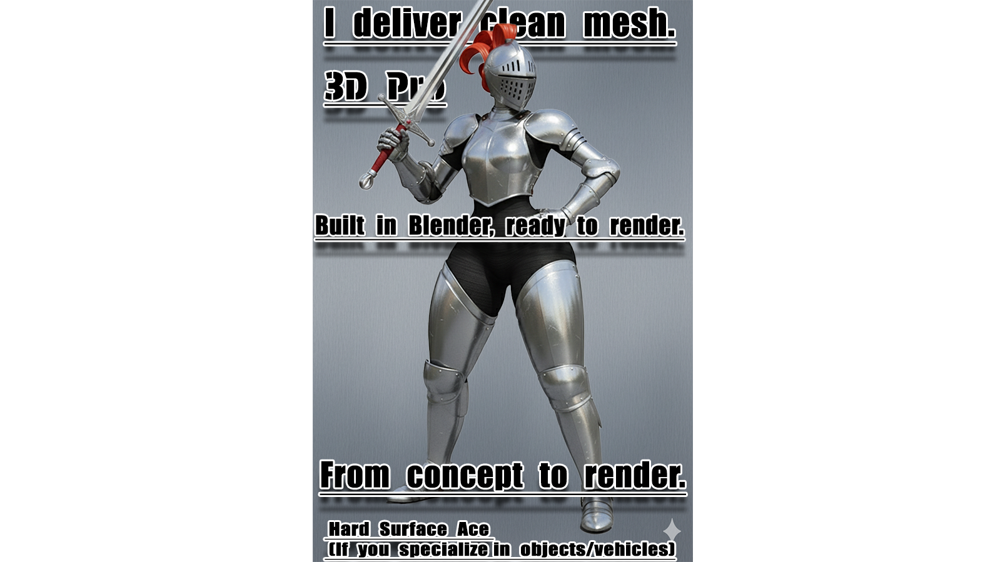

My Story
Jadi gini Cerita gua Dengerin nih gua pengangguran tanpa skill dan gua suka COLI COLI dan COLI
My Superpowers
- Coli
- Nonton Bokep
- Coli
- Google searching like my life depends on it
< DEV CLIPS >
ASSET DEMO #1
TEST RENDER #2
< PROJECT SHOWCASE >

